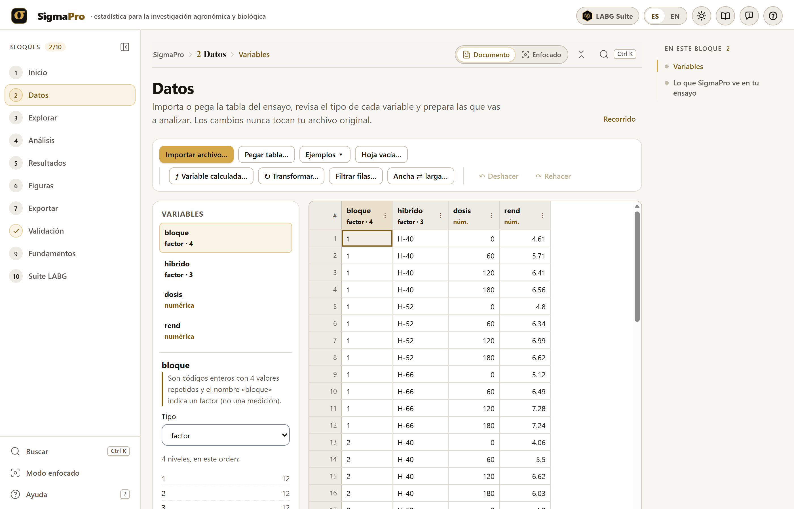
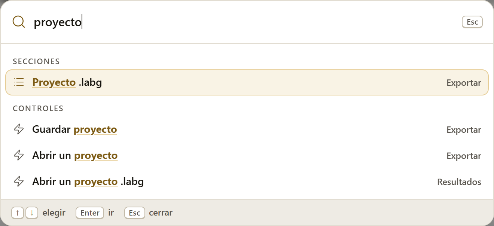
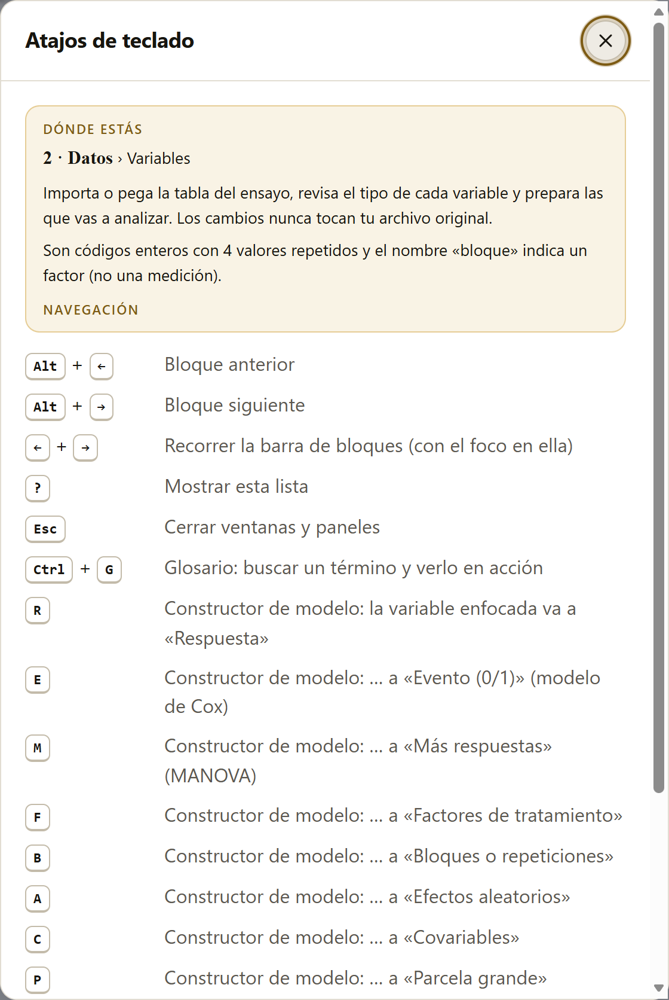
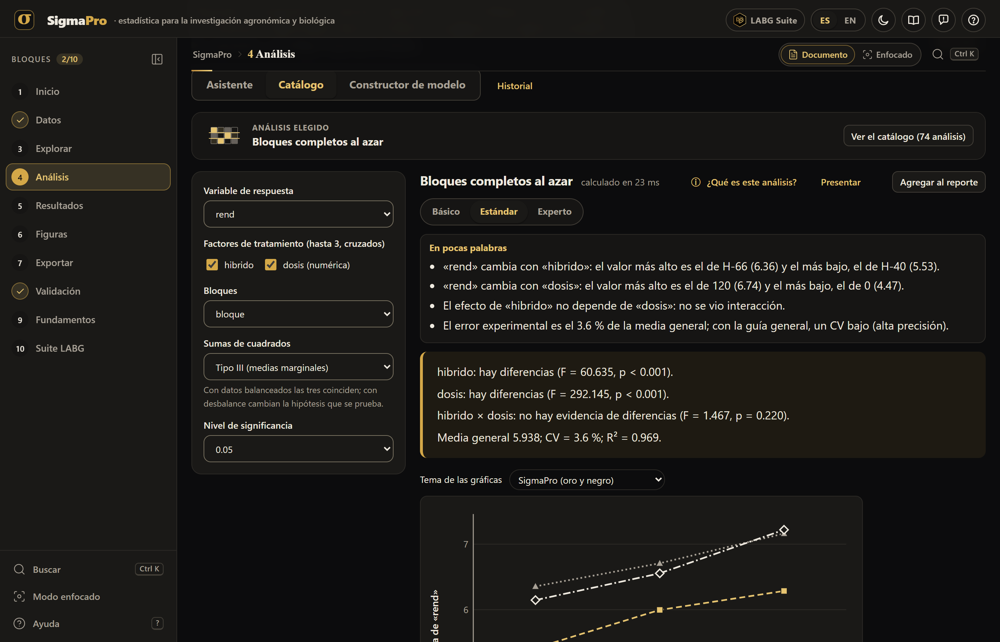
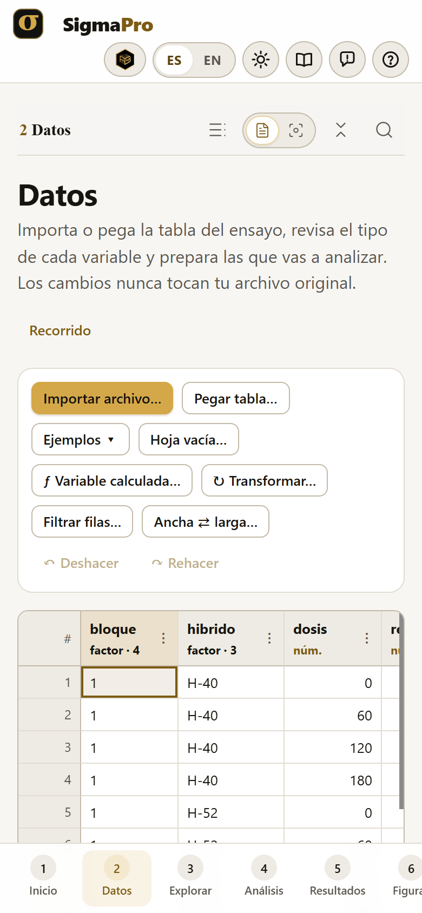

El párrafo de métodos que arma el reporte (sección 5.4) cita el programa con la versión que tengas abierta, junto con R, y la lista de referencias del reporte exportado trae la de cada método que usaste.
SigmaPro funciona por completo dentro de tu navegador. Los datos que abres, los análisis y los reportes se calculan en tu computadora y nunca se envían a ningún servidor, ni siquiera en los modelos que corren en el motor R, que también trabaja dentro del navegador. Puedes analizar los datos inéditos de una tesis o de un ensayo sin que salgan de tu equipo.
Las capturas de pantalla, las figuras y los números de este manual salen del propio programa, con los 27 ensayos de ejemplo que trae: seis son datos publicados, citados donde se usan; los demás son ficticios, construidos para que cada análisis tenga un caso claro, y no deben citarse como datos.
El manual sigue el orden de la app: diez bloques numerados que se recorren de arriba abajo en la barra lateral. Cada capítulo explica un bloque y lleva su mismo número: el capítulo 4 es el Bloque 4, y sus secciones, figuras y cuadros se numeran 4.1, 4.2… La introducción, antes de los bloques, se numera I.1, I.2…
El color del bloque aparece en la apertura de su capítulo, en el número de cada sección, en la pestaña del borde de la hoja y en el índice.
| Bloque | Nombre en la app | Qué hace |
|---|---|---|
| 1 | Inicio | La portada: para qué sirve la app, el camino de un análisis, la lista de lo que puedes analizar, cómo citarla, la pantalla de apertura y el aviso para recuperar un trabajo guardado |
| 2 | Datos | Importar, pegar o abrir un ejemplo; la hoja de trabajo, los tipos de variable, las variables calculadas, las transformaciones, los filtros, ancha ⇄ larga y lo que SigmaPro ve en el ensayo |
| 3 | Explorar | Descriptivos, frecuencias, proporciones y bondad de ajuste, con sus intervalos |
| 4 | Análisis | El asistente, el catálogo y el constructor de modelos; sus 74 análisis (los otros 4 están en Explorar), de los diseños experimentales y las comparaciones de medias a los modelos mixtos, generalizados y el resto de las familias |
| 5 | Resultados | El Reporte LABG: los análisis guardados, con sus cuadros, figuras, supuestos, el párrafo para la tesis y el código R |
| 6 | Figuras | Las figuras del reporte, sus temas, sus descargas, el editor ✎ y el Estudio de figuras |
| 7 | Exportar | El reporte en .docx, PDF o HTML, los cuadros, las figuras, el proyecto .labg y el guardado automático |
| 8 | Validación | La comparación de cada resultado contra R, caso por caso |
| 9 | Fundamentos | Una ficha por análisis: para qué sirve, el modelo, los supuestos, los datos que necesita, cómo se lee y sus referencias, con datos de ejemplo y plantillas |
| 10 | Suite LABG | Las apps hermanas que continúan el trabajo, las sugerencias dentro del análisis y cómo llevar los datos de una app a otra |
Aclaraciones y consejos prácticos que ahorran tiempo.
Lo que puede cambiar tus conclusiones si se pasa por alto.
La idea detrás de un cálculo, sin fórmulas innecesarias.
Un texto o un resultado tal como sale de la app.
| Así se escribe | Significa |
|---|---|
| Agregar al reporte | Un botón, casilla, campo o menú de la app, con su texto tal como aparece en pantalla. |
rend, hibrido * dosis + (1 | bloque) | Un nombre de columna, una fórmula o un valor que se escribe tal cual. |
| «rend», «Germinó» | Los nombres de las variables y de sus niveles, entre comillas, como los escribe la app en sus conclusiones. |
| 5.938 · F = 60.63 · p < 0.001 | Los números con punto decimal, como en la app; las letras de los estadísticos, en cursiva. |
| Figura 4.28 · Cuadro 4.3 | Las figuras y los cuadros del manual. Los cuadros que numera la app dentro de un resultado («Cuadro 1. Análisis de covarianza») se nombran por su título. |
Todos los números del texto son los que da la app con sus ejemplos (bloque Datos → Ejemplos ▾) y los valores por omisión, salvo cuando se dice otra cosa. El ejemplo principal es «Maíz: híbridos × nitrógeno», un factorial de 3 híbridos por 4 dosis en 4 bloques; cuando un capítulo usa otro ejemplo, lo nombra antes de dar sus resultados. Con el mismo ejemplo verás los mismos números.
Qué es el programa, qué preguntas de un ensayo responde, qué datos acepta y qué entrega, cómo se abre y se recorre, en qué idioma trabaja y lo que todavía no hace.
SigmaPro es un programa de estadística para la investigación agronómica y biológica que funciona dentro del navegador, sin instalar nada y sin internet. Lleva los datos de un ensayo, del archivo de campo a la tabla y la figura publicadas, por un solo camino.
Ese camino es el de los bloques: cargar los datos, explorarlos, elegir el análisis que corresponde al diseño, leer la conclusión, revisar los supuestos y exportar el reporte. Está hecho para quien analiza sus propios experimentos —estudiantes de licenciatura y de posgrado, profesores, investigadores de campo e invernadero— y quiere resultados correctos sin escribir código. Por eso cada resultado empieza con una conclusión en palabras, revisa sus supuestos, cita sus métodos y da el código R que repite el cálculo. Sus 78 análisis, en 18 familias, van del análisis de varianza de un diseño experimental a los modelos mixtos, la heredabilidad, los ensayos multiambiente, la supervivencia y las series de tiempo. Cada uno tiene su ficha de fundamentos, que explica qué hace, qué supone, qué datos necesita y cómo se lee (capítulo 9).
Y cada número se compara contra R: su núcleo de cálculo es propio, pero R es el juez. La comparación, caso por caso, viene dentro de la app (capítulo 8). SigmaPro forma parte de la LABG Suite, un conjunto de apps libres que también corren en el navegador; el capítulo 10 explica cuáles continúan el trabajo de un análisis.
| La pregunta | Dónde |
|---|---|
| ¿Cómo son mis datos? ¿Hay valores raros, faltantes, grupos con pocas observaciones? | Explorar (capítulo 3) y lo que SigmaPro ve en el ensayo (sección 2.13) |
| ¿Difieren mis tratamientos? ¿Cuáles de ellos? | Diseños experimentales y comparaciones de medias (secciones 4.10 y 4.11) |
| ¿Se cumplen los supuestos del análisis? Si no, ¿qué hago? | El semáforo de cada resultado y los supuestos del modelo (sección 4.7) |
| ¿Cuál es la dosis óptima? ¿Cómo responde el cultivo a un factor cuantitativo? | Polinomios, regresión, modelos no lineales y superficies de respuesta (secciones 4.11, 4.12, 4.18 y 4.19) |
| ¿Qué tanto se relacionan dos variables? ¿Qué variables explican el rendimiento? | Correlación y regresión múltiple (secciones 4.12 y 4.13) |
| ¿Los bloques, las localidades o los años son aleatorios? ¿Cómo analizo parcelas perdidas o medidas repetidas? | Modelos lineales mixtos (sección 4.15) |
| ¿Cuánta de la variación es genética? ¿Qué genotipos selecciono? | Heredabilidad, BLUP y ensayos multiambiente (secciones 4.16 y 4.20) |
| ¿Cómo analizo conteos, proporciones o tiempos hasta un evento? | Modelos generalizados y supervivencia (secciones 4.17 y 4.23) |
| ¿Cuántas repeticiones o cuántas plantas necesito? | Potencia, repeticiones y muestreo (sección 4.22) |
| ¿Cómo lo presento en la tesis o en el artículo? | El reporte, las figuras y las exportaciones (capítulos 5 a 7) |
| ¿Qué hace un análisis, qué supone y cómo deben estar mis datos para usarlo? | Su ficha en Fundamentos (capítulo 9) |
| ¿Qué otra herramienta sigue el trabajo: sortear el diseño, explorar muchas variables, formar grupos? | Suite LABG (capítulo 10) |
El análisis de un experimento depende de cómo se hizo: si hubo bloques, si un factor se aplicó a parcelas grandes, si las medidas se repitieron en la misma planta. SigmaPro lee la estructura del ensayo en los datos (sección 2.13) y el asistente pregunta lo que no se puede leer, para proponer el análisis que corresponde al diseño, no el más conocido.
Cada resultado empieza diciendo lo que encontró («hibrido: hay diferencias (F = 60.635, p < 0.001)») y después da los cuadros. Los números están ahí para quien los quiera revisar; la conclusión está para que nadie los lea mal.
Los análisis revisan sus propios supuestos: la mayoría los muestra con un semáforo en el resultado, y los diseños experimentales los revisan con Revisar los supuestos del modelo (sección 4.7). Si algo falla, la app dice qué hacer: transformar, cambiar de prueba o usar un modelo que no lo suponga.
Un método no aparece en la app hasta que todos sus casos de validación coinciden con R a seis cifras (capítulo 8).
Cada resultado trae su código R, el reporte cita los métodos con sus versiones y el proyecto .labg guarda los datos y los análisis con sus huellas, para que otra persona llegue a los mismos números.
SigmaPro lee tablas en texto delimitado (CSV, TSV), libros de hoja de cálculo (.xlsx, .ods) y tablas pegadas, con una fila por unidad experimental y una columna por variable (sección 2.2). Reconoce los factores, las variables numéricas, las fechas y los identificadores, y deja corregir cualquiera. Trabaja cómodamente con cerca de 100 000 filas.
Entrega el reporte completo en .docx, PDF o HTML; cada cuadro en CSV, y todos juntos en una hoja de cálculo o en LaTeX; las figuras en SVG, PDF vectorial, PNG o TIFF a 600 ppp; y el proyecto .labg con los datos, los análisis y el código R. Además, cada ficha de Fundamentos da una plantilla en CSV o XLSX para preparar tus datos (sección 9.5). El apéndice A detalla cada archivo.
index.html, desde la carpeta del programa, o desde su página en internet. La primera vez que se abre la página en internet, el navegador guarda la app para usarla después sin conexión.Al abrir SigmaPro aparece su pantalla de apertura: sobre fondo negro, el logo y el nombre se dibujan en unos seis segundos y la escena se queda fija hasta que pulsas Start (o Entrar). Saltar o Esc la quitan en cualquier momento.
El selector ES · EN de la barra de arriba cambia el idioma de toda la app: los menús, las conclusiones, los cuadros, el reporte, el párrafo de métodos y las fichas de Fundamentos. Al cambiarlo, la app guarda el trabajo y se recarga en el otro idioma, con los mismos datos y los mismos análisis; el idioma elegido se recuerda la próxima vez. Los comentarios del código R equivalente quedan en español. Este manual describe la interfaz en español.

1234567891011121314La barra de bloques lleva a cualquier bloque en cualquier momento; un bloque que necesita algo que todavía no existe (datos, un análisis en el reporte) lo dice y ofrece el botón para ir por ello. Alt + ← y → pasan al bloque anterior o al siguiente.


El botón del sol cambia al tema oscuro, más cómodo de noche o en un proyector; las figuras se descargan siempre con los colores del tema claro (y con el tema de gráficas que elijas, capítulo 6). En una pantalla angosta (un teléfono, una tableta de pie), la barra de bloques pasa al pie de la pantalla, como una fila de pestañas que se desliza a los lados, y los botones de la barra de arriba bajan a un segundo renglón.


Casi todo SigmaPro corre en su propio núcleo de cálculo, escrito para el programa. Algunos métodos —los modelos lineales mixtos, las medidas repetidas y los modelos mixtos generalizados— necesitan algoritmos que R hace mejor que nadie, y para ellos SigmaPro trae un motor R: R compilado para correr dentro del navegador (webR), con los paquetes lme4, lmerTest, emmeans, nlme y car.
motor-r/ y abierto desde un servidor, el motor sale de esa misma carpeta y no hace falta internet ni la primera vez.La sección 4.6 explica el aviso y qué métodos lo usan.
El orden de los bloques es el orden en que se analiza un ensayo. No es obligatorio recorrerlo completo: lo que un bloque necesita de otro lo toma solo.
En cualquier paso, el botón ⓘ ¿Qué es este análisis? abre la ficha del análisis en Fundamentos (bloque 9), con lo que supone y los datos que necesita, y al pie de algunos resultados la franja Continúa en la suite LABG sugiere la app que sigue el trabajo (bloque 10).
El bloque Datos trae 27 ensayos de ejemplo (Cuadro 2.2), uno o más para cada familia de análisis, incrustados en el programa para que funcionen con doble clic. Seis son datos publicados —la segregación de Mendel, los venenos de Box y Cox (1964), la avena en parcelas divididas de Yates (1935), un alfa-látice y un ensayo de avena en 14 ambientes de Olivoto y Lúcio (2020) y el alargamiento de un hilo hecho con tres polímeros de Cornell (2002)— y los demás son ficticios, construidos para que cada análisis tenga un caso claro. El principal del manual es «Maíz: híbridos × nitrógeno»: 3 híbridos con 4 dosis de nitrógeno en 4 bloques completos al azar, 48 parcelas.
SigmaPro hace bien lo que hace, y dice lo que todavía no hace. Estos son sus límites conocidos.